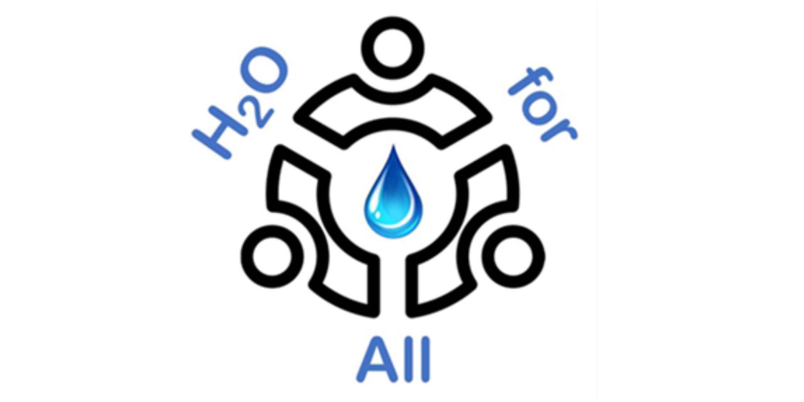
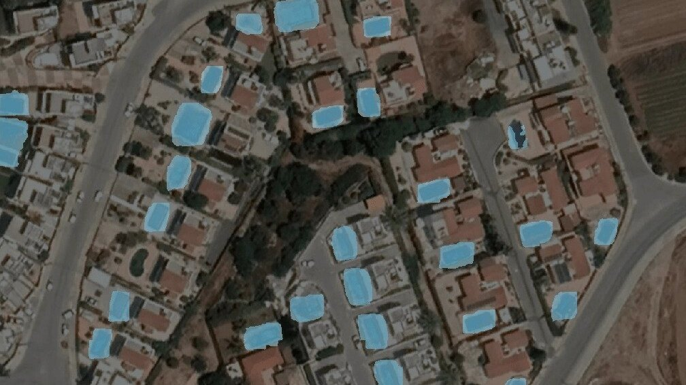
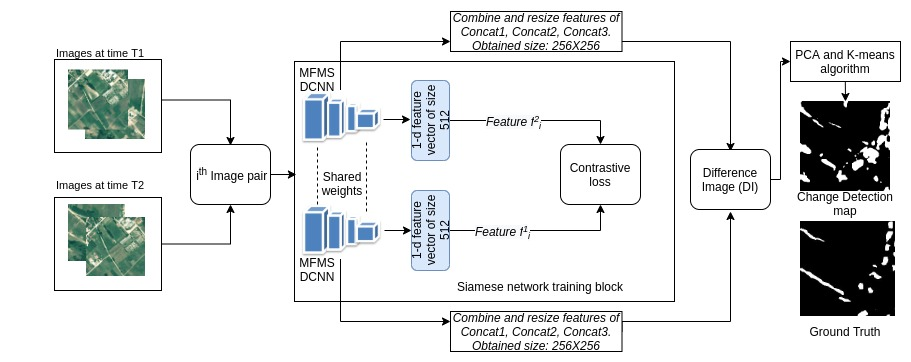
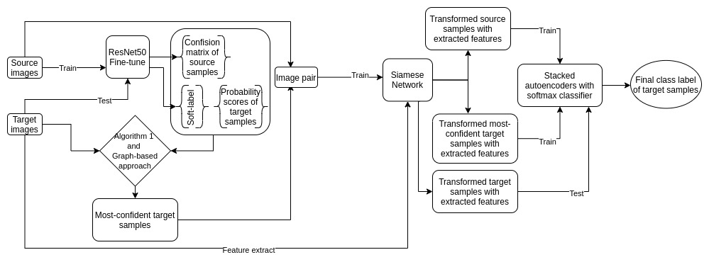

Seasonal Rainbelt Forecast
Currently working on seasonal rainbelt forecasting using a data-driven approach that incorporates partial differential equations (PDE) as a regularizer to improve model accuracy and physical consistency.
Currently working on seasonal rainbelt forecasting using a data-driven approach that incorporates partial differential equations (PDE) as a regularizer to improve model accuracy and physical consistency.
A deep learning model predicts rainfall over Ghana with accuracy comparable to or better than ECMWF’s 18-hour forecasts. Combining this model with traditional numerical weather prediction further improves performance.

Horizon Europe project H2OforAll “Innovative Integrated Tools and Technologies to Protect and Treat Drinking Water from Disinfection Byproducts (DBPs)” (total budget of €3,452,700.50, Partners organizations 17) funded by the European Union (project lead on behalf of CYENS)

Detect the area occupied by swimming pools/buildings inside the geographical area under study based on their canopy from high spatial resolution satellite imagery, using advanced, state-of-the-art proprietary AI models.

Land Use Change Detection Using Deep Siamese Neural Networks and Weakly Supervised Learning

Deep learning based adaptive land cover monitoring by analyzing remotely sensed images